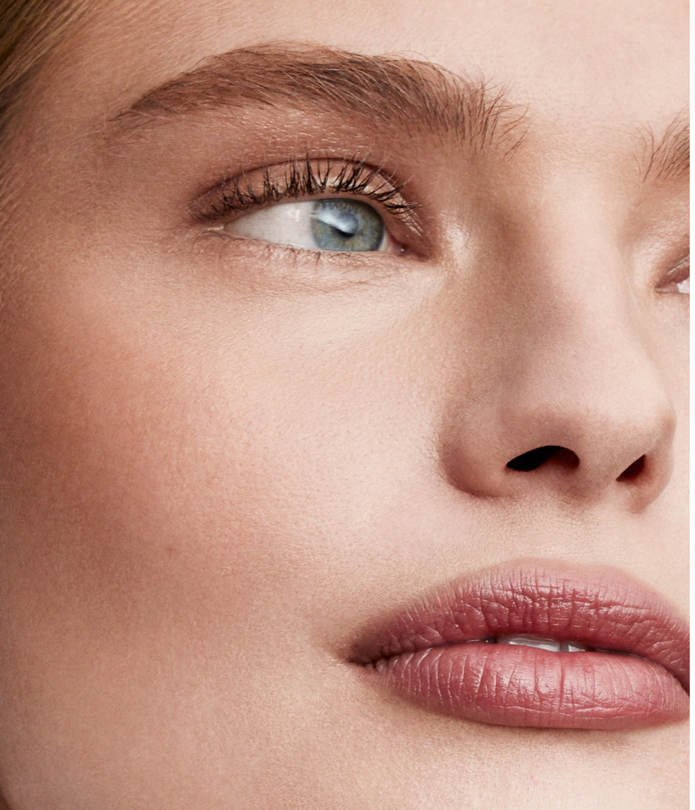

BELLEZA & SKINCARE
Tratamiento del rostro
Maquillaje
Contacto
PASOS PARA TRANSFORMAR TU PIEL CON UN MAQUILLAJE SKIN-LIKE
1. Skin Prep
Aplica una crema hidratante ligera para evitar que se te cuartee el maquillaje.
Usa un tónico si necesitas cerrar tus poros.
2. Elegir la base adecuada
Escoge una base que se adapte a tu tono y tipo de piel.
Evita bases muy pesadas para un look natural.
3. Difuminar bien los productos
Usa una brocha o esponja para difuminar las sombras.
El colorete y el contorno deben ser difuminados para evitar líneas visibles.

Recuerda que en el maquillaje, a veces menos es más. Así que no te excedas con los productos.